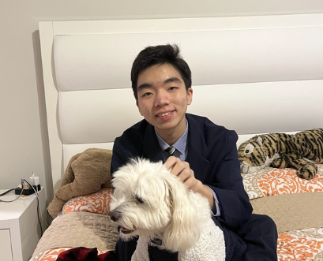

Overview
Peared is a nonprofit that seamlessly simplifies logistics by centralizing large scale organizations' efforts into small, local areas!
🛠
Volunteer Opportunities
Meet the dedicated individuals behind our organization:
Create an Event
Users can create events whether they are organizations or individuals! If enough people join and the party is verified, you are greenlit to continue your cause!
Join an Event
Users can join events created by others, doing small jobs for a great ambition! By joining the work of others, you can help make an impact while gaining real world experience! If you need volunteer hours, we are working on an autonomous system but are happy to sign it personally for now.
Join Our Team
If you want to do more than just join, you can submit an application to join our developers and staff. Whether you're computer programming or event programming, we take prospective members very seriously. Make sure you're confident and determined to help! More information is listed below.
🍐
Our Team
Meet the dedicated individuals behind our organization:
Officers
Anushka Polapally - Lead Developer & Financial Director
Anushka is a junior at Tompkins and is interested in computer science and mathematics. Through Peared, she wants to help create effective service efforts through a volunteering social network!
Andrew Yoon - Lead Developer & Financial Director
Andrew is a freshman from Tompkins High School with experience in software and mechanical engineering. He's trying to help making an impact efficient and approachable with new technologies like our web services!
Rocky Polapally - Emotional Support
Rocky is a dog and a major chicken nugget enthusiast! He is an expert at social engineering to collect them! (only one part of this is true)
Gaathri Chakka - Head of Media
Gaathri is a sophomore at Tompkins and is interested in business and creating innovative solutions. Through Peared, she hopes to create efficient impact and foster community interactions.
Sophia Ni - Head of Event Production
Sophia is a sophomore at Tompkins High School, and she's interested in business and finance. She's so excited to see the impact Peared will have on communities as it grows!
Back-End Developers
If you happen to see this, please change hovering to a less annoying dynamic feature!
Front-End Developers
If you happen to see this, please change hovering to a less annoying dynamic feature!
Finance
Outreach
Events
⏳
Our History
Join us as we walk you through the history of our organization:
Peared accepts new members to help its cause
April 21st, 2025
Peared inducts its first junior administrators software, financial, outreach, and events to join their cause!
Peared releases its first UIUX and database components (holistically)
April 12th, 2025
The website that you're reading will house the Peared UIUX. On a future date, we will integrate our database to make it available for use hosted here. Ask us about our Beta version if you're interested!
Peared submits to the Diamond Challenge
December 2024
In order to garner support from a wider audience, Peared submitted its concept to judges and made it to the second round.
Peared is Conceived
November 2024
We discovered that many elderly patients passing through the hospital where Anushka's mom practices were incapable of finding help or entertainment, even if they were in good health.
📞
Contact Us
If you have any questions or would like to get in touch, please contact us at:
Email: pearedco@gmail.com
Phone: (832) 593-3075
Messages & Whatsapp: pearedco@gmail.com
🔎
Join Us
If you are interested in volunteering or supporting us, please fill out the form below: